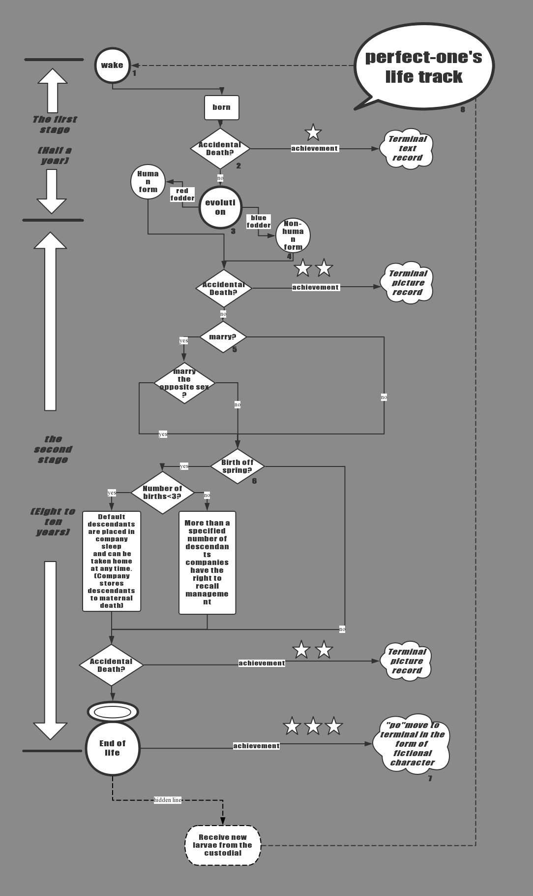

Perfect-one is a life-like product with the ability to grow and evolve. It is a new companion-type cross-age product developed and designed by the "BUBBLE" company team! Bring you a more realistic and companion experience from the robot era!
●Develop a unique pet or companion that belongs to you!
●Cooperate with the terminal, more control settings, higher playability!
●Online and offline linkage! With other Perfect-one owners in the virtual and real community!
LIFE TRACK CHART
CHART COMMENT
1.WAKE UP
When you place an order from our "BUBBLE” company website, we will receive our parcel after two to three days and in it a jar that looks like a vacuum jar. Take out the terminal and tap the main screen "Summon". The black spherical body will gradually appear in the jar, and the growth program starts automatically. The unique little things that belong to you are working!
2.ACCIDENTAL DEATH
died during the first stage
Untimely feeding can result in a decrease in the health value of the larvae (using props-specific food recovery), and untimely strokes and responses can lead to a decrease in emotional values (recovery using prop toys). To a certain extent, it can lead to larval diseases, which can be cured with medication. Multiple ignorance will cause your Perfect-one to leave home and die. The “QU” and the “PO” will be recycled by BUBBLE, and you will get a written record of the development at the terminal as the one-star achievement.
died during the second stage
If your Perfect-one has entered the second stage, treat them like a living body. The Perfect-one is not like the same type of mechanical products, and they are still flesh and blood. In addition to the above-mentioned deaths during infancy, other accidental injuries may also result in their death. At the second stage, The “QU” and the “PO” will be recycled by BUBBLE,,and you will get a record of the development of the illustration at the terminal as the two-star achievement .
3&8.EVOLUTION AND LIFE TRACK
Growth and evolution are one of the first major gameplays of our first generation. Every evolution of an Perfect-one will undergo an evolution. The time is about half a year in human time, which marks the Perfect-one’s growth from first stage to the second stage, that is, the Perfect-one evolved from the shape of the growing ball to the state of your ideal biological infant. The growth of the second phase of Perfect-one is the same as that of natural organisms. Of course, you can use the terminal to pause the appearance of the Perfect-one at any age you want (this doesn't change the "lifetime" of the Perfect-one adult for a decade or so).
4.FEEDIND
It is very important to give food regularly. It is necessary to have a cause. It is related to the subsequent growth and development.
Please use the specific food produced by BUBBLE. Feeding the red food will make your Perfect-one evolve like a pet, feeding the blue food will make your Perfect-one evolve like a humanoid mate. When you feed other foods, it may cause the Perfect-one to grow uncontrollably or even die from the original route. If this is not the result you want, be sure not to do so.
5.MARRIAGE
In the world of Perfect-one, the wedding can be held three years after entering the second stage.We default that each Perfect-one can marry the same kind of Perfect-one of any gender.
You can choose to have your Perfect-one wedding either online or offline. Of course, you can also choose to have your Perfect-one marry virtual NPC Perfect-ones online (there are no legal rules for Perfect-one to marry humans at the moment).
6.BIRTH
We default that each Perfect-one can produce descendants with the same kind of Perfect-one of any gender, or it can be produced without the partner's offspring. Each Perfect-one can only produce up to 2 offspring, and cannot sell and transfer the offspring privately. The offspring will temporarily be deposited in BUBBLE's headquarters in an initial sleeping-state, and it will inherit the previous generation of "DNA (data on the appearance of some personal behaviors of the previous generation). BUBBLE withhold the right to recall and save when the prescribed number of births have been exceeded. Newborns who are not awake can be summoned to the previous generation at any time (the company will save the sleeping newborn for you until the previous generation dies). The owner of the Perfect-one can go to the shelter after its Perfect-one dies and receive a newborn Perfect-one for free.
7.“QU”AND “PO”
“QU&PO" is a virtual concept, you can understand the body and soul of the Perfect-one, "PO" is the crystallization of the final volume data of your Perfect-one after setting and training.
It is a natural law to live and die. This also applies to the non-living body of Perfect-one. Each Perfect-one will have a life span of 8 to 10 years depending on the care of the owner. The “qu” of the Perfect-one after its death will be recycled by BUBBLE. And “PO” with the virtual image store virtual map will be uploaded to your terminal to accompany you in another way.
SUPPOTING FACILITIES
As you can see, come home with your Perfect-one with a terminal panel, you can use it to adjust and position your Perfect-one, you can start hosting at the terminal when you don't have time to look at your Perfect-one, your Perfect-one will pause all activities with "growth" and go into standby mode.
Props You can purchase a variety of virtual and realistic items in the terminal store. For example, you can give your Perfect-one healthy medicine, a variety of virtual pendants and physical accessories. A gift that triggers random reactions and bonuses, as well as the rarest potions that give your Perfect-one growth acceleration and the longevity of life.
CULTIVATION MANUAL
With Perfect-one, you can fully enjoy the fun of development. From birth, the name, appearance, personality, and other data can be set in the terminal. Some random event foods and your behavior will cause its set personality. influences. If you don't want this, you should find that intervention control, which will minimize the loss for you.
The significance of BUBBLE's existence is to give you a unique companion experience. So, in the setting of Perfect-one you are the master of the world, you have the right to choose your companion, whether a human or another animal form. In the terminal panel, you can use your maximum imagination and creativity. You can create a life-like form that is different from any creature on earth, or an assistant with an unparalleled knowledge base, or an individual with a unique personality and personality that fits your personal preferences. You are an artist and the Perfect-one will be your unique artwork that is perfected step by step.
Once you confirm that you have learned more about this instruction, you can open the jar. The unique Perfect-one will give you a unique and fun experience. More care,more companionship.We wish you enjoy this wonderful experience. If you have any questions, you can consult our online customer service through the terminal at any time. We will do our best to solve all your problems.